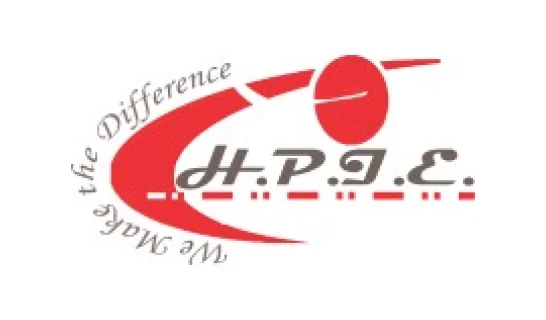

Industries That Trust Task Tracker
Task Tracker is tailored for various sectors, including:



Task Tracker is the ultimate workflow management software that will elevate your organization's efficiency. Our comprehensive workflow management system empowers you to enhance task prioritization, team allocation, and overall business management, helping you optimize resource allotment.
Sign Up Book DemoTask Tracker is the premier workflow management software solution to streamline your operations and boost productivity. Our platform offers some seamless capabilities for your limitless workflow.
Task Tracker is meticulously designed to fulfill all your workflow management requirements. Our unique business workflow management system features include the following capabilities that will ease your workflow and give relief to your daily workloads.
Stay on top of your projects with the best workflow management software, a centralized view of tasks, deadlines, and team progress at one dashboard, eliminating struggle while switching between different pages.
Let Task Tracker handle the administrative tasks, so you can focus on the work that matters. This streamlined workflow management software have inbuilt WhatsApp feature to remind and update regarding the status of your work.
The tool will optimize your workflow by helping you manage the status of your tasks or projects in real time and help the management team to make informed decisions so that for future projects there will be no extra loads left.
The tool makes your workflow management system smarter and more feasible by enhancing your productivity by connecting Task Tracker with the tools you already use.
Yes. Fortunately, the enterprises can use the task tracker that is designed to scale your organization. Large organizations require enterprise workflow management software to handle complex processes. Key features include:
Yes, with the help of Task Tracker, the new business era will have a competitive advantage, and this is business workflow management software that will become a major advantage for SMEs
Explore the full potential and amazing capabilities of Task Tracker.
Task Tracker is tailored for various sectors, including:

"Task Tracker has revolutionized our business operations. The time tracking and reporting features have significantly improved our project delivery timelines."
- Alex, Project Manager

"Thanks to Task Tracker, we can monitor remote teams in real time. It's the best task management software we've used."
- Priya, Operations Head

"The integrations with WhatsApp and Slack are game-changers for our team. Highly recommend Task Tracker!"
- Ravi, Team Lead
Join thousands of satisfied businesses using Task Tracker for their task management needs. Sign up for free today and experience the best task management app in action.